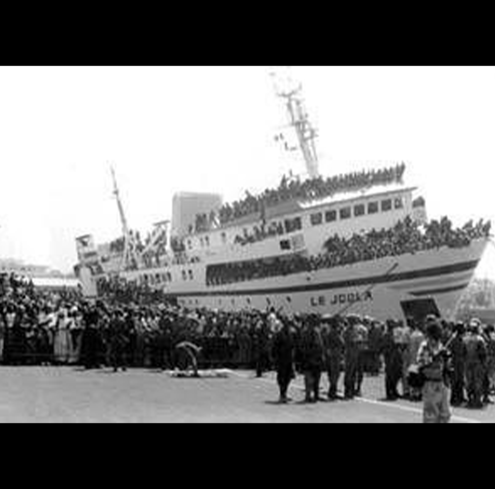
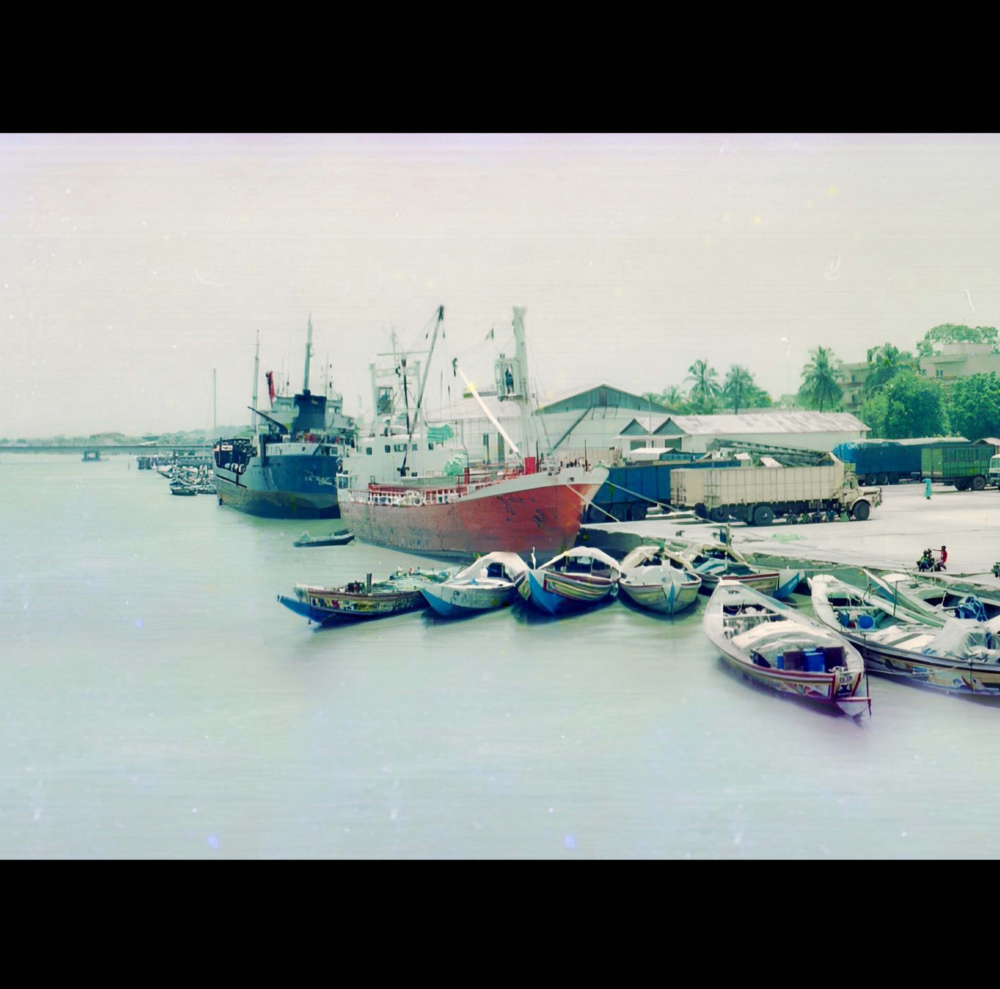
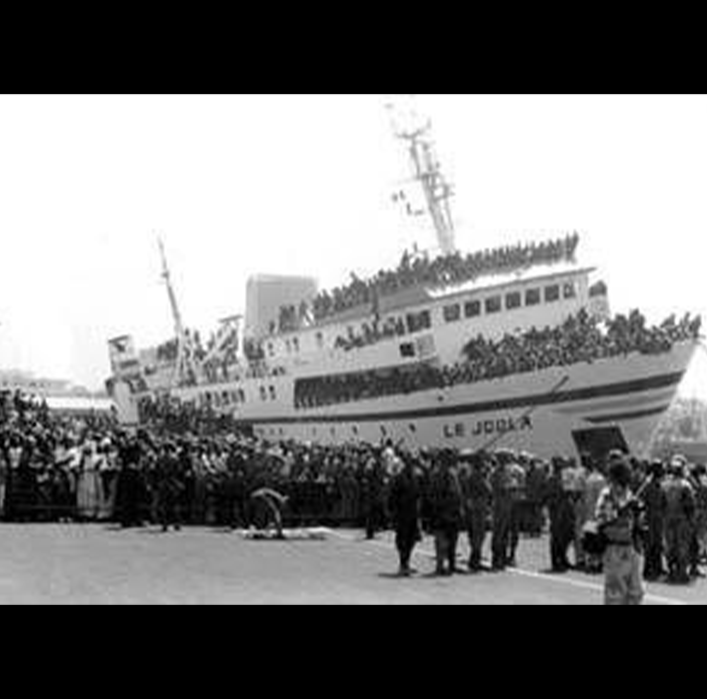
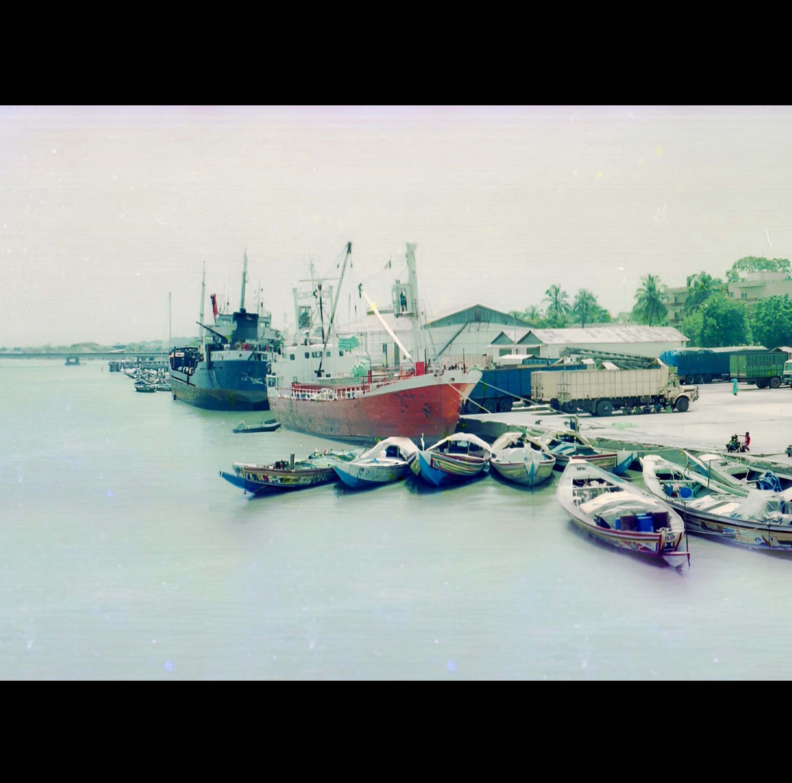
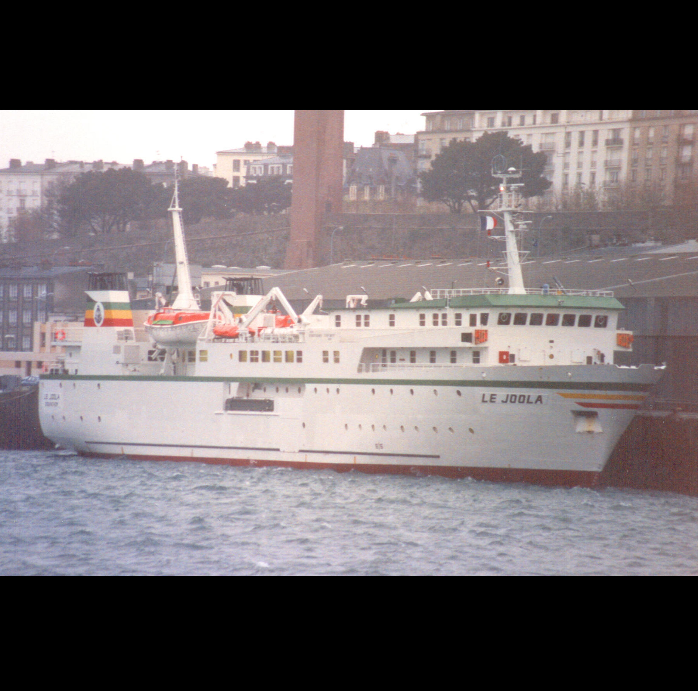
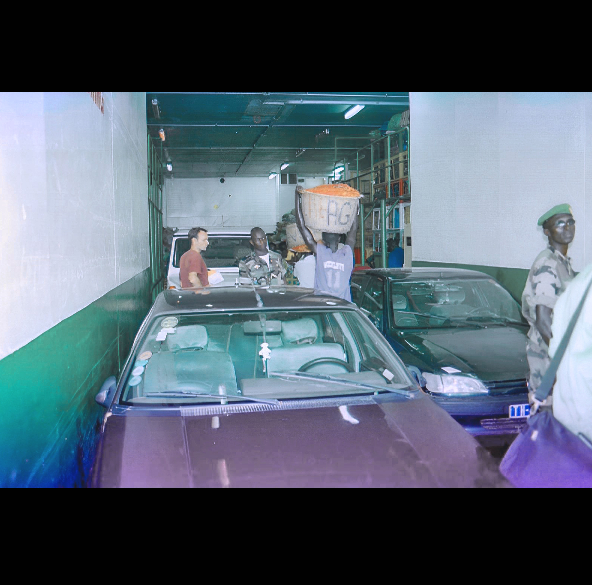
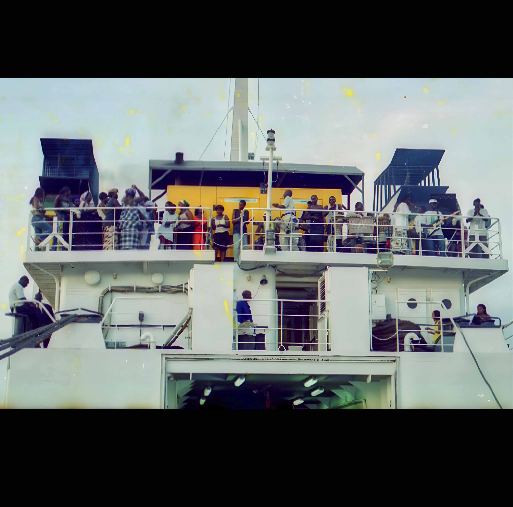
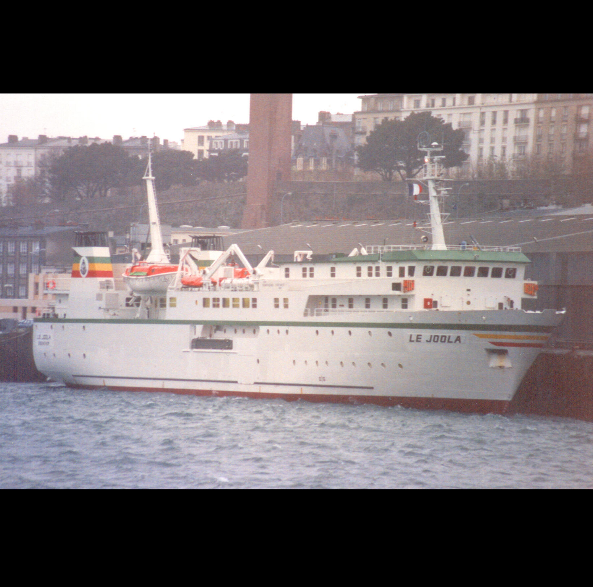
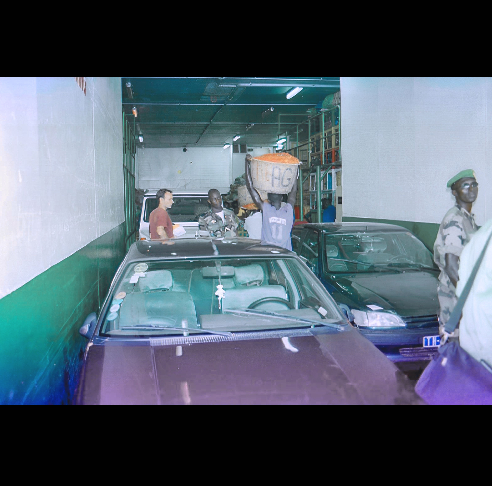
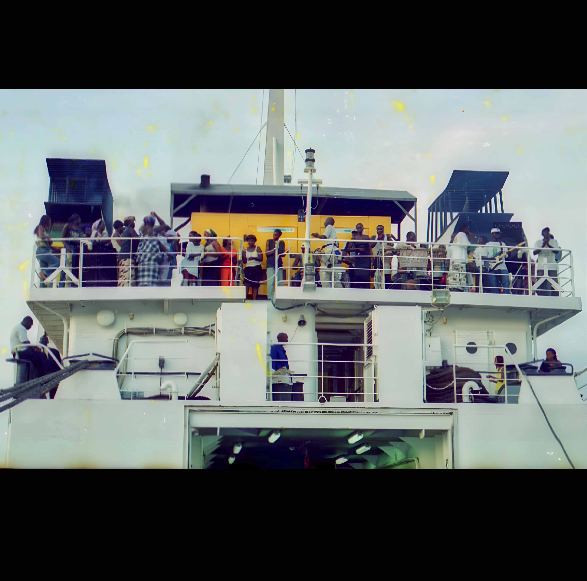

Ziguinchor
Le port de Ziguinchor est situé à l’entrée du fleuve Casamance. Il date de l’époque coloniale. Il fait partie des trois ports les plus importants du trafic maritime sénégalais. Pendant, plusieurs décennies, il a servi à accueillir tous les bateaux engagés dans la liaison maritime Dakar-Ziguinchor. De sa cérémonie de réception à son dernier voyage, le MS Joola a abordé le Port de Ziguinchor pendant plus d’une décennie. C’est du port de Ziguinchor qu’il entama son dernier périple avant de glisser au fond de l’océan ou il git encore aujourd’hui. Chaque année, c’est au port de Ziguinchor que se déroule la cérémonie officielle de commémoration de l’anniversaire du naufrage du bateau le Joola, en présence des autorités administratives et politiques, des familles et proches des naufragés, ainsi que de rescapés. Il reste un symbole fort de l’histoire du transport fluviomaritime au Sénégal.

 



 





Latitude de Ziguinchor: 12.586962
Longitude de Ziguinchor: -16.275713
Carabane
L'île de Carabane est située à l'extrême Sud du Sénégal dans l'estuaire du fleuve Casamance à 60 km de Ziguinchor, la capitale régionale, et à 30 mn de pirogue du village continental le plus proche, Elinkine. Escale de la liaison maritime Dakar-Ziguinchor, Carabane était un des passages incontournables dans le circuit du Bateau le Joola. Le Ms Joola a ainsi accosté son port pendant plus d’une décennie pour servir dans le trafic de personne et de biens. Lors de son dernier voyage, le Joola aurait marqué une escale dans cette belle île centenaire. Elle porte aujourd’hui les stigmates de la mémoire du naufrage et reste éternellement un lieu de souvenir et de mémoire.
Latitude de Carabane: 12.545365
Longitude de Carabane: -16.699584
Dakar
Situé dans la presqu’il du Cap-Vert, le port de Dakar date de l’époque coloniale. Il est le quatrième port d’Afrique de l’ouest après Lagos, Abidjan et Lomé. Ce port occupe une place centrale dans l’histoire de la navigation maritime au Sénégal. C’est à partir de ce port que le Bateau le Joola a effectué son voyage inaugural vers Ziguinchor en décembre 1990. Pendant, plus de dix-ans, le Joola a abordé le port de Dakar soit pour effectuer le trajet vers Ziguinchor ou pour subir des travaux de curage et de maintenance. Avant son dernier voyage, il est resté stationner pendant plus de deux-ans au port de Dakar pour subir d’important travaux de maintenance. En 2002, à l’annonce du drame, le port de Dakar à accueilli la cellule de crise pour coordonner les opérations de sauvetage et accueillir les parents et familles de victimes. Il demeure aujourd’hui un lieu de commémoration et de souvenir en mémoire des victimes du naufrage.
Latitude de Dakar: 14.656604
Longitude de Dakar: -17.430826
Kachouane
Kachouane est un village de la région de Ziguinchor qui se trouve dans le département d’Oussouye et dans la commune de Diembéring. Son chef de village NDONGO THIAW raconte que la localité a été fondée par Malamine Ndiaye vers 1800 et compte actuellement plus de 600 habitants. Les groupes ethniques présents sont les joola, sérère, sarakholé et peulh. Les principales religions sont l’islam et le christianisme. Les principales activités économiques du village sont l’agriculture, la riziculture, la pêche, la récolte des huitres et le jardinage. Quant aux infrastructures, Kachouane dispose d’une école et un forage. Les décisions sont prises par l’ensemble des populations autour du Chef de village.
Latitude de Kachouane: 12.503001
Longitude de Kachouane: -16.717936
Wendaye
Situé dans le département d’Oussouye et la commune de Diembering, Wendaye a été créé, d’après ANTOINE NDIAYE (chef de village), par Charles NDIAYE. Les religions pratiquées dans le village sont : l’Islam, le Christianisme et l’animisme. Le village a divers groupes ethniques dont les joola et les manjaques sont majoriatires. Les infrastructures existant de Wendaye sont l’école, le dispensaire et les bassins de rétention. Sur le plan de l’assainissement individuel, les ménages sont dotés de latines. Dans le système d’organisation de la localité, les habitants se sont constitués en équipes pour effectuer des travaux de désherbage, d’agriculture, etc. La terre et l’eau sont les ressources principales qui permettent au village de mener des activés comme la pêche, la riziculture, l’exploitation des produits halieutiques. Le village s’informe souvent à partir de l’instrument traditionnel, le bombolong et également le téléphone. Photo 2 : Discussion avec le chef de village de Wendaye en chemise vert (© Pape Mbissane Touré, novembre 2022)
Latitude de Wendaye: 12.483938
Longitude de Wendaye: -16.692740
Sifoca
Le village de Sifoca est une localité de la région de Ziguinchor qui fait partie du département d’Oussouye et dans la commune de Diembéring. D’après son chef de village JULIEN DIATTA, Sifoca a été créé vers 1777 par Latsouck FAYE. Sa population actuelle est de 160 habitants majoritairement constitués de joola. En termes d’infrastructures, le village a une école élémentaire et une chapelle. Les principales activités économiques menées dans le village sont la pêche, la riziculture et l’exploitation des produits halieutiques. Dans le village, les femmes sont fortement impliquées dans les instances de décision.
Latitude de Sifoca: 12.492118
Longitude de Sifoca: -16.684339
Ourong
Situé dans le département d’Oussouye et dans la commune de Diembering, le village d’Ourong a été créé par Dioussé GOMIS ABDOURAHMANE GOMIS. La population actuelle du village est estimée à 650 habitants avec comme principales religions l’Islam et le Christianisme. Les diolas constituent le principal groupe ethnique du village. Les types d’organisation communautaires et les activités menées sont la danse d’ekonkone et le football. En termes d’infrastructures, le village dispose d’un foyer des jeunes, d’une case de santé, d’une maternité et d’une école. À Ourong, l’eau et la terre constituent les principales ressources qui influencent les populations à pratiquer des activités économiques liées au tourisme, la pêche, l’agriculture et l’exploitation des produits halieutiques. Les sources d’information de la localité reposent sur l’instrument traditionnel du bombolong, la radio, le téléphone et la télévision. Lorsqu’il faut parler des problèmes de la localité, les femmes sont impliquées dans les discussions.
Latitude de Ourong: 12.452099
Longitude de Ourong:-16.676588
Gnikine
Gnikine est un village de la région de Ziguinchor qui se trouve dans le département d’Oussouye et dans la commune de Diembéring. C’est une localité fondée par Bafène Diatta et compte environ 300 habitants selon le chef de village AMBROISE ELADIENE DIATTA. Ses habitants joola d’obédience chrétienne et animiste. Les activités pratiquées sont l’agriculture surtout par les hommes et le repiquage du riz par les femmes. Les activités culturelles et sportives qui participent à la vie du village sont la lutte et la danse d’ekonkone. La seule infrastructure qui existe dans le village est une école élémentaire. Les activités économiques pratiquées sont la pêche, l’agriculture et le maraichage. L’information circule par le biais du téléphone, de la radio et une cloche qui est sonnée lorsqu’un rassemblement des populations doit se tenir pour une prise de décision.
Latitude de Gnikine: 12.530146
Longitude de Gnikine: -16.758474
Diogué
L’île de Diogué est une localité de la région de Ziguinchor qui fait partie du département de Bignona et de la commune de KATABA 1. Selon son chef de village CHERIF DIATTA, la localité est fondée vers 1800 par Kalibe Essama Diatta. La population est estimée aujourd’hui 500 habitants répartis dans une centaine de ménages. Sur le plan religieux, un parfait équilibre est observé entre l’islam, le christianisme et l’animisme. La population de l’île est composée de joola, ghanéen, manjack, peulh et soussou. L’émigration qui constituait naguère une source de revenus du village est abandonnée par les jeunes puisqu’ils ont pris conscience des difficultés du monde extérieur. Les activités traditionnelles tournent autour de la danse ékonkone et des séances de lutte. Les ressources économiques sont l’eau et la terre. L’île de Diogué compte en termes d’infrastructures un foyer des jeunes, une case de santé, une école maternelle et une école élémentaire. D’après le chef de village, les sources d’information de l’île sont la télévision, la radio et le téléphone. La plupart des décisions se prennent par concertation.
Latitude de Diogué: 12.575329
Longitude de Diogué: -16.745749
Hitou
Hitou est un village de la région de Ziguinchor qui fait partie du département de Bignona et dans la commune de Kafountine. D’après son chef de village PHILIPPES HILARION DIATTA, la localité compte environ 750 habitants essentiellement joola de croyance animiste. Le phénomène migratoire vers l’Espagne existait bien avant qu’il y ait une prise de conscience des difficultés. Les principales ressources du village sont la terre et l’eau qui permettent de mener des activités économiques comme la pêche, la récolte de vin de palme, la cueillette des huitres, le ramassage de coquillages, etc. En termes d’infrastructures et équipements, Hitou a une école et un dispensaire. Les activités culturelles communautaires sont souvent basées sur la danse d’ekonkone, la lutte traditionnelle et le football. Selon le chef de village, la radio et le téléphone sont les sources d’information des habitants. Les décisions sont prises dans la localité après une concertation d’une assemblée générale où tout le monde est impliqué.
Latitude de Hitou: 12.618843
Longitude de Hitou: -16.689675
Niomoune
Niomoune est une île de la région de Ziguinchor qui fait partie du département de Bignona et dans la commune de Kafountine. D’après ADAMA JULES TABAR, un cultivateur de Niomoune et frère du chef de village RIGOBERT TABAR, le premier habitant de cette localité s’appelle Diamounougho Badji. Actuellement, le village compte au moins 500 habitants exclusivement joola et répartis dans la religion traditionnelle et celle du christianisme. Le village compte une infrastructure sanitaire et une école publique. Face à une situation, lorsqu’il faut prendre une décision, c’est toutes les personnes majeures qui sont impliqués.
Latitude de Niomoune: 12.632809
Longitude de Niomoune:-16.649399
Cagnout
Le village de Cagnout est une localité de la région de Ziguinchor qui fait partie du département d’Oussouye et de la commune de Mlomp. MAAN SIMENG BUHAL, 9ème roi du Cagnout, règne dans cette localité (Royaume Essoumal de Cagnout). Constitué majoritairement de joola, le village est aujourd’hui un espace où religion traditionnelle, christianisme et islam cohabitent. Concernant les mouvements de population, les habitants de Cagnout se déplacent vers Dakar, dans la sous-région, en Europe et même en Amérique.
Latitude de Cagnout: 12.551213
Longitude de Cagnout: -16.626526
Samatite
Samatite est une localité du département d’Oussouye et de la commune de Mlomp. D’après le chef de village STANISLAS BABENE, la localité a été fondée au 11e siècle avant J.-C. Il compte plus de 500 habitants et la majorité est d’ethnie joola. Les religions pratiquées sont la religion traditionnelle et le christianisme. Les activités culturelles et de loisirs menées sont la lutte et le football. Sur le plan organisationnel, on notera la présence de GIE Le village dispose d’une école élémentaire et d’une miellerie en cours de construction. Les ressources de Samatite reposent sur la terre et l’eau qui permettent au village de mener des activités économiques comme l’agriculture, la pêche saisonnière, la récolte du vin de palme, etc.
Latitude de Samatite: 12.537239
Longitude de Samatite: -16.644127
Saint-Georges
La Pointe Saint-Georges est une localité du département d’Oussouye et de la commune de Mlomp. D’après Alexandre DIEME (frère du chef de village), Pointe Saint-Georges est encore appelé Ponta di réa (appellation portugaise). C’est une localité qui compte environ 300 habitants composés de joola, mandingue et manjack avec comme principales religions le christianisme, l’animisme et l’islam. Les tournois de foot et les soirées dansantes sont les principales activités récréatives et activités du village. Le village dispose d’une école élémentaire. D’après RENÉ SAGNA, l’adjoint au chef de village, les ressources principales du village sont la terre et l’eau qui facilitent la pratique de la pêche, l’agriculture, l’exploitation des produits halieutiques. Les sources d’information de la localité sont la radio, le téléphone et la transmission de bouche à oreille. Les décisions dans le village sont prises de façon inclusive où hommes et femmes sont tous impliqués.
Latitude de Saint-Georges: 12.615721
Longitude de Saint-Georges: -16.566130
Elinkine
Elinkine est une localité du Sénégal qui se trouve dans le département d’Oussouye et la commune de Mlomp. Cette localité serait à l’origine une propriété du village de Samatite.D’après son Chef de village MAMADOU NDIAYE, Elinkine compte environ 400 habitants. La diversité ethnique est grande : Joola, Guinéen, Bissau guinéen, Ghanéens, Serere, Peulh, Mandingue, Manjack, Mancagne Soninké, … À Elinkine, les religions pratiquées sont l’animisme, le christianisme et l’islam. Les activités culturelles sont basées sur la danse traditionnelle d’ekonkone, la lutte traditionnelle et l’organisation de tournois de football.
Latitude de Elinkine: 12.506470
Longitude de Elinkine: -16.662848
Mlomp
Mlomp est une commune du Sénégal qui se trouve dans le département d’Oussouye. Il est noté la présence d’autorités administratives et traditionnelle avec la présence d’un Roi MAAN SIBILE SAMBOU. D’après ce dernier, Mlomp serait issu d’une vague migratoire venue de la Guinée Bissau, guidée par des oiseaux marins vers leur habitat naturel. Concernant les croyances, la religion traditionnelle, le christianisme et l’islam constituent les religions pratiquées par les principaux groupes joola (majoritaires) et peulh. D’après Maan Sibilé Sambou, Roi de Mlomp, les événements culturels les plus importants restent le Kamaghène (fête des récoltes), le bougnit (célébration de la fin des activités agricoles), la danse d’ekonkone et la lutte traditionnelle. Pour ce qui est des prises de décisions dans la localité, elles sont assurées par l’autorité administrative d’une part et le gouvernement du roi d’autre part. Les activités économiques pratiquées dans la commune de Mlomp sont l’agriculture vivrière et l’élevage. Concernant les infrastructures, la commune possède des écoles élémentaires et maternelles, d’un CEM et d’un lycée.
Latitude de Mlomp: 12.558660
Longitude de Mlomp: -16.578902
Lieu Du Naufrage
Au large des côtes gambiennes, à hauteur de la localité de Sanyang, fit naufrage le Bateau le Joola dans la nuit du 26 au 27 septembre 2002. L'épave git entre 11 et 16 mètres de profondeurs sur un fond marin sableux. La position de l'épave du Joola est devenu un lieu de repos éternel pour certaines victimes du naufrage. Quelques objets de cette épave constituent les contenus du musée du Mémorial Bateau le Joola, sis au quartier escale de Ziguinchor.
Latitude de Mlomp: 12.558660
Longitude de Mlomp: -16.578902